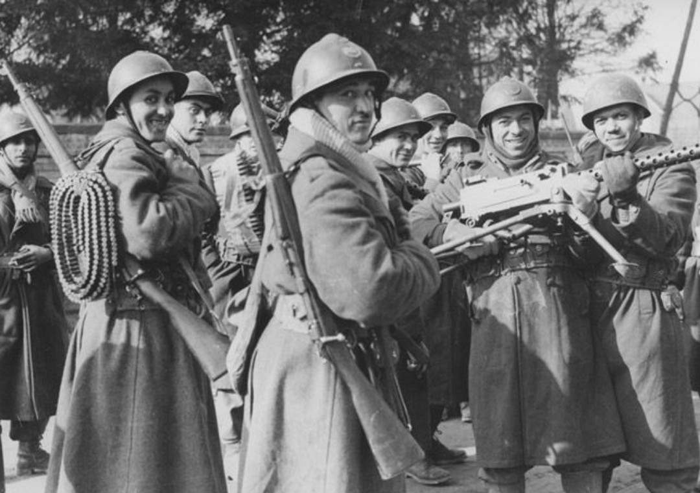
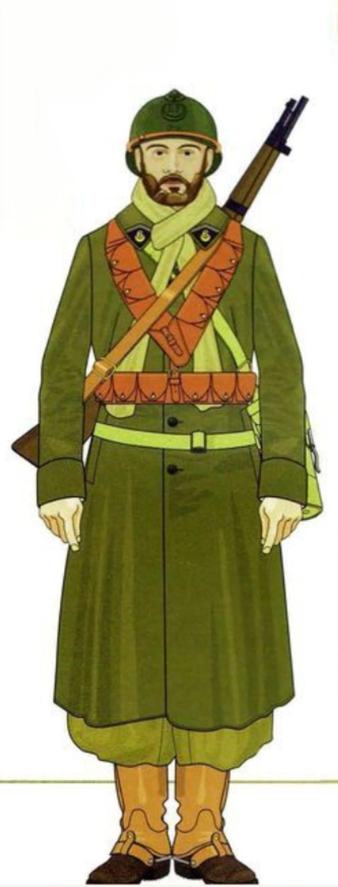

Présentation générale
Les Tirailleurs Marocains sont des troupes d’infanterie coloniale recrutées au Maroc.
Leur uniforme est immédiatement reconnaissable grâce au turban blanc et à la djellaba
sable, typiques des unités nord-africaines.
Ils combattent en Afrique du Nord, en France en 1940, puis en Italie, en Corse et en
Provence entre 1943 et 1945.

Équipement individuel
- Turban blanc ou beige
- Djellaba sable (signature visuelle des unités marocaines)
- Vareuse coloniale couleur sable
- Pantalon ample ou droit selon le théâtre
- Ceinturon et cartouchières en cuir fauve
- Brodequins modèle 1917 + guêtres
Armement
L’armement est identique à celui de l’infanterie française, avec une forte présence
du Berthier et du MAS‑36.
- Fusil Berthier Mle 07/15 ou 1916
- Fusil MAS‑36
- FM 24/29
- Pistolet Ruby ou Mle 1935 (officiers)
- Grenades OF 37
Variantes selon les théâtres
Les Tirailleurs Marocains adaptent leur tenue selon les climats :
- Maroc / Afrique du Nord : djellaba + turban blanc
- France 1940 : casque Adrian M26, tenue plus foncée
- Italie / Provence 1943–45 : djellaba + Adrian, équipement renforcé